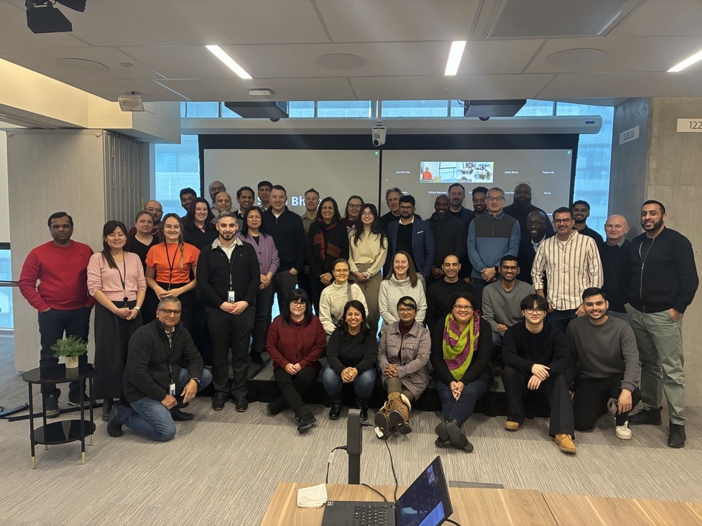
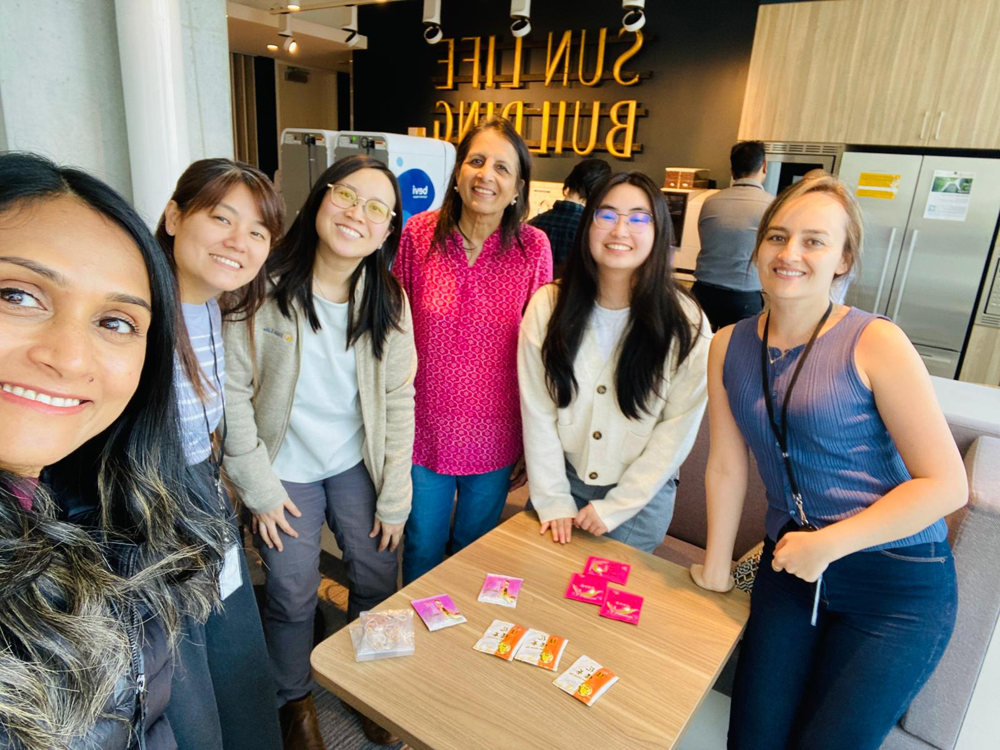
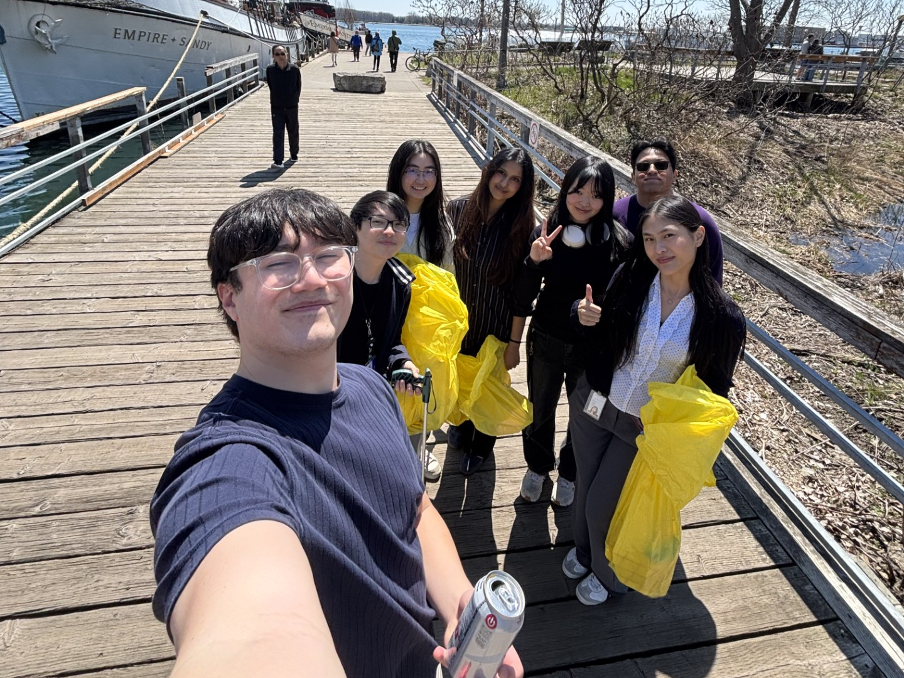
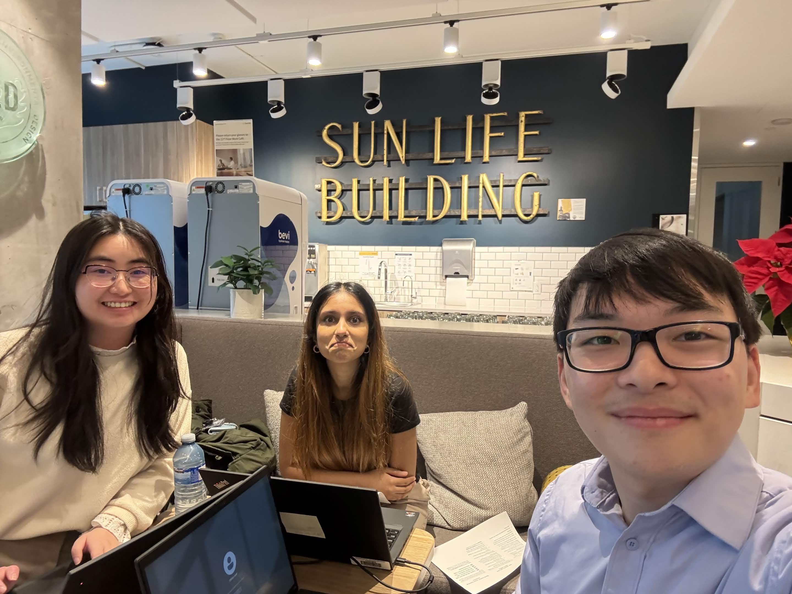
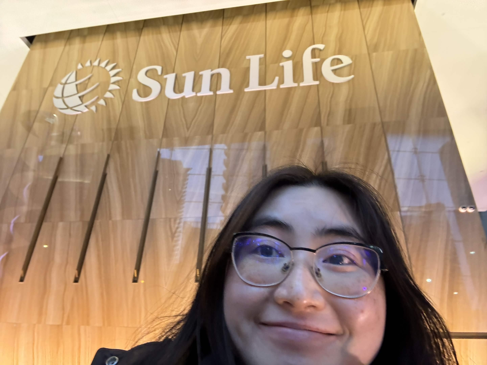
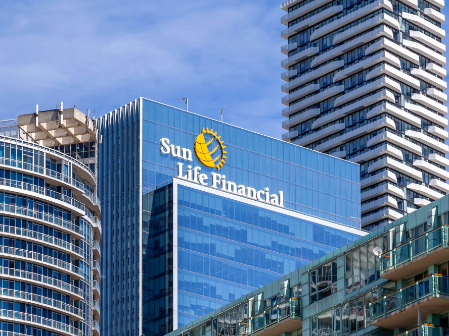

Work Term Report 4
Introduction:
Over my previous two co-op terms, I worked in web coordinator roles within small marketing teams. In both positions, much of my work focused on building and maintaining websites using content management systems such as WordPress. These experiences helped me strengthen my front-end skills while showing me how web development supports broader marketing and communication goals. However, as much as I enjoyed these roles, I felt ready for a new challenge. I wanted an opportunity to go more in-depth with front-end development and work in a more technical environment.
This past winter, I joined Sun Life Financial as an Associate Front-End Developer. Moving from small marketing teams to a large, global company was an exciting yet intimidating change. This term gave me the opportunity to expand my technical skills, gain exposure to enterprise-level development practices, and better understand how front-end work contributes to digital experiences!
About My Team:


Sun Life is one of Canada's leading financial services companies, with their goal being to help Canadians achieve lifetime financial security and live healthier lives! To support this mission, Sun Life offers a wide range of products and services, including insurance, wealth management, group benefits, and retirement solutions. Specifically, Sun Life works with individuals, families, and businesses to help them build savings, protect what matters most, and plan for the future!
Although Sun Life is a large and well-established company, it also continues to adapt and evolve alongside new technologies. Throughout my term, I saw how the organization explores tools such as artificial intelligence and modern development practices to improve workflows and create better digital experiences for both Clients and employees.
Global Front-end and Accessibility Team
In both my previous roles, my team had numerous responsibilities spanning many different mediums and skills. For front-end work, this included all stages of any project (content planning and copywriting, UI design and prototypes, execution and testing, etc). However, at Sun Life, it has dedicated teams for all these stages.
My team at Sun Life is the Global Front-end and Accessibility Team, within the Digital Business and Technology Solutions (DBTS) division. Sun Life has several front-end teams that support different regions, such as Canada, the U.S., and Asia. My team, however, is part of the Global Digital Experience team, which acts as the central team responsible for maintaining Sun Life's main website platform. We develop and support the shared components, templates, and standards that are used across regional sites to ensure a consistent and reliable web experience worldwide!
Having 11 members, this is the one of the larger team I have worked in! I have worked closely with three specific members; Deepa Vora, our Front-end and Accessibility Director, Samuel Tesfamichael, our Digital Accessibility Director, and Gopinath Prasanna, our Principal Front-end Developer. Our team consists of two subgroups with the following responsibilities:
🖥️ Front-end
- Develop and maintain Sun Life's public-facing websites and web pages.
- Build and enhance reusable UI components within Sun Life's internal design system.
- Work within Adobe Experience Manager (AEM) to create and update templates, components, and page content.
- Ensure websites are responsive, accessible, and consistent with Sun Life's design and brand standards.
♿ Accessibility
- Review and solve accessibility-related tickets and issues across digital projects.
- Conduct accessibility audits and prepare reports identifying areas for improvement.
- Provide recommendations to help teams meet accessibility standards such as WCAG.
- Promote accessibility knowledge and best practices across teams to support inclusive digital experiences throughout the organization.
For this winter term, I worked with both parts of the team— gaining both technical proficiency and accessibility knowledge!
Role: Student, Associate Front-end Developer
Beginning this co-op was both exciting and intimidating, as it was my first formal software development role. While I had a strong foundation in HTML, CSS, JavaScript, and web design, I had little practical experience with many of the tools and frameworks used by professional front-end teams, such as Bootstrap and React. I was transparent about this during the hiring process, while also emphasizing my enthusiasm to learn and my willingness to take on new challenges.
Throughout the term, I was able to strike a balance between applying the skills and experience I had developed in previous roles and stepping outside my comfort zone to work with unfamiliar technologies and workflows. This approach allowed me to contribute meaningfully to the team while also gaining significant technical and professional growth. The projects I worked on challenged me to expand my front-end development knowledge, strengthen my understanding of accessibility and documentation, and build confidence working within a large-scale software development environment.
Specifically, I want to highlight my main two projects that was worked on throughout the term:
Confluence Redesign and Migration

What is Confluence?
Confluence is a collaborative documentation platform developed by Atlassian. Organizations use it to create and organize internal websites that store team knowledge, technical documentation, processes, and resources. In this context, our Confluence space serves as a central hub for front-end developers across Sun Life to access coding standards, accessibility guidelines, and development best practices!
Project Overview
One of my primary projects was leading the redesign and migration of our global front-end team's Confluence space. While the site contained a large amount of valuable information, it had become text-heavy and difficult to navigate. My goal was to reorganize the content and apply a new template structure to create a more modern, visually engaging, and intuitive experience.
My Contributions
- Migrated all pages into a newly organized site structure.
- Applied a consistent template and design across the space.
- Updated branding elements for visual consistency.
- Reorganized content to improve discoverability and usability.
- Improved accessibility and overall user experience.
Skills and Technical Aspects
- Technical documentation and content strategy
- Information architecture and content hierarchy
- User experience (UX) and navigation design
- Visual design and branding implementation
- Accessibility and inclusive design principles
- Content migration and large-scale page restructuring
- Confluence templates, macros, and page authoring tools
What I Learned
This project deepened my understanding of front-end best practices, accessibility standards, and development workflows. By reviewing and restructuring every page, I also became more familiar with the documentation and processes used by experienced developers! This includes topics such as unit testing, microfrontends, and continuous integration. It also broadened my experience in content strategy for technical audiences, which was a new challenge compared with my previous work creating content primarily for students and non-technical users.
React Project - Greenframe Sustainability Dashboard
What is React?
React is a JavaScript library used to build dynamic and interactive user interfaces through reusable components. Instead of creating each page element from scratch, developers build components that can be reused throughout an application. In this project, React was used to build a dashboard that displays sustainability data in a modular and maintainable way!
Project Overview
My second major project involved supporting the development of a React dashboard that integrates with GreenFrame. The dashboard displays metrics such as carbon emissions and energy consumption, helping development teams better understand and reduce the environmental impact of their digital applications.
My Contributions
- Implemented UI components using Sun Life's component design system.
- Developed API integrations to retrieve and submit data between the front-end and back-end systems
- Created JEST unit tests to ensure component reliability and functionality.
- Conducted accessibility testing using screen readers and keyboard navigation tools.
- Supported front-end development, debugging, and UI refinement across features.
- Implemented Microsoft Azure AD Single Sign-On (SSO) authentication flow.
Skills and Technical Aspects
- React and component-based front-end development
- JavaScript and modern web development practices (HTML, CSS, etc.)
- API integration and asynchronous data handling
- State management and application logic (useState, useMemo)
- JEST Unit testing and component validation
- Data sanitization (DOMPurify), validation, and secure coding practices
- Accessibility testing using screen readers and keyboard navigation (JAWS, axeDevTools)
- Debugging, troubleshooting, and problem-solving in development workflows
What I Learned
This project significantly expanded my front-end development skills and was my first in-depth experience working with React in a production environment. I strengthened my understanding of component-based architecture, API integration, state management, unit testing, and debugging, while becoming more confident working through technical challenges independently.
A key part of my learning came from actively exploring unfamiliar technologies! I especially enjoyed learning API integration for the first time, as it helped me understand how data is fetched and used across an application. I also really enjoyed working with Microsoft Azure SSO, where I spent time reading documentation to understand the authentication flow and how to properly implement it. This made the learning process more engaging, as I was able to connect documentation directly to real implementation.
Beyond technical skills, I also improved my ability to work in a collaborative development environment. I learned how to interpret requirements more effectively, ask clearer questions, and adapt my work based on feedback and team priorities. Overall, this project strengthened both my technical foundation and my confidence in learning new tools within a team setting!
Additional Learning


Aside from my projects, I also attended several co-op networking events and had opportunities to speak with leaders across the organization. These experiences strengthened my communication skills and provided valuable insights into career development. It was also especially interesting to see how Sun Life continues to evolve as a large, well-established company. Through initiatives involving artificial intelligence, sustainability, and digital transformation, I gained a broader understanding of how organizations balance innovation with stability while adapting to rapid technological change.
Goals and Reflections
Goal 1 🎯
As technology continues to rapidly move, I wish to strengthen my ability to critically inquire into and analyze emerging front-end concepts, tools, and best practices! This includes improving my research skills to better evaluate different technologies and approaches, as well as developing my capacity to think creatively when applying these insights to solve technical challenges.
Reflection ✅
Throughout the term, I consistently worked to strengthen my ability to research, analyze, and apply new front-end technologies and development approaches. As this was my first formal software development role, many of the tools and concepts I encountered were unfamiliar to me. To build my understanding, I regularly reviewed team-written documentation and supplemented my learning with external resources, such as Udemy courses focused on JavaScript, React, and TypeScript.
As I encountered new concepts, I made a conscious effort to understand not only how they worked, but also why certain approaches were chosen over others. I explored alternative solutions, compared implementation strategies, and considered the advantages and limitations of each option. This was especially valuable while working on the Greenframe dashboard, where I researched React fundamentals, API integration, data sanitization, and Microsoft SSO. Leading the redesign of our Confluence space also required me to analyze how information was organized and creatively restructure it into a more intuitive and engaging resource.
Overall, this experience significantly strengthened both my critical thinking and creative problem-solving skills in a practical development environment.
Goal 2 🎯
Working within an international organization like Sun Life, I aim to deepen my understanding of how a global company operates both internally and externally. This includes learning how Sun Life presents itself as a brand across different regions, how it works toward meeting diverse client needs and organizational goals, and how these broader business practices influence internal operations such as team collaboration, workplace culture, and employee experience.
Reflection ✅
Throughout my work term, I developed a stronger understanding of how a global organization operates and how broader business considerations influence technical work. By collaborating with team members and exploring internal resources, I saw how branding, accessibility, and user experience decisions are shaped by the diverse needs of clients and users across different regions. Supporting Sun Life's global web platform also showed me how shared design systems, development standards, and accessibility practices help maintain a consistent digital experience worldwide.
I also found it especially interesting to see how Sun Life, a large and long-established company, continues to adapt to rapid technological change through initiatives involving artificial intelligence, sustainability, and digital transformation. Overall, I became more mindful of different user perspectives and strengthened my ability to connect front-end decisions with broader organizational and global contexts, w hile developing a more critical and intentional approach to evaluating emerging technologies.
Goal 3 🎯
I will work towards improving my aptitude in various front-end technologies by strengthening both my theoretical understanding and practical application of the tools and frameworks used within my role.
Reflection ✅
By the end of this term, I made significant progress in both my technical skills and confidence as a front-end developer. Although I began the role with limited practical experience in tools such as React, APIs, and unit testing, I actively engaged with documentation, best practices, and internal development standards and applied what I learned directly in my work. Through projects such as the Greenframe dashboard, I gained hands-on experience with React, component-based development, API integration, state management, code sanitization, and testing.
Over time, I became increasingly independent in completing assigned tasks and more confident in reading documentation, troubleshooting issues, and making informed implementation decisions. Overall, this work term greatly strengthened my theoretical understanding and practical application of front-end technologies and gave me a much stronger technical foundation moving forward.
Conclusions and Acknowledgments


My work term at Sun Life was an incredibly meaningful experience. As the largest company I have worked for, I was initially intimidated by the scale of the organization and the number of teams and individuals involved. I expected the culture to be quite formal, but I was pleasantly surprised by how welcoming, supportive, and collaborative everyone was. Despite Sun Life's size, the environment felt very close-knit, and I quickly felt like a valued member of the team.
Throughout this term, I had the opportunity to challenge myself in my first formal software development role while learning from talented and experienced professionals. I am especially grateful to Deepa Vora for being such a supportive manager and mentor, and to Gopinath Prasanna and Samuel Tesfamichael for guiding me through new front-end and accessibility experiences. I'd also like to thank Jennifer Luo and Kateryna Semenova, two other team members who welcomed me so kindly and made team activities so enjoyable! I would also like to thank the many Sun Life leaders who took the time to speak with co-op students, as well as the other co-op students who made this experience even better! Specifically, my dear friends and fellow gryphons Inderjeet Gill and Molin Li.
I feel very fortunate to have been part of a company that not only delivers meaningful services to its clients, but also places strong emphasis on accessibility, sustainability, innovation, and continuous improvement. Working alongside individuals who are thoughtful, driven, and genuinely supportive made me proud to contribute to such an influential organization.